Krok Po Kroku 1
Temat 11 - Rodzina
A. Czyja to rodzina?
słownistwo - A. Czyja to rodzina? =>
👰🤵 „Mężatka” и „żonaty” — в чём разница?
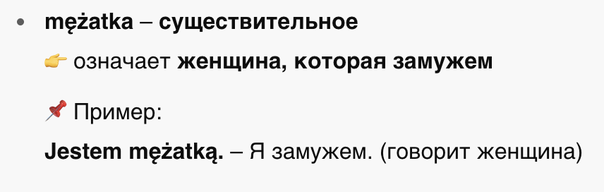
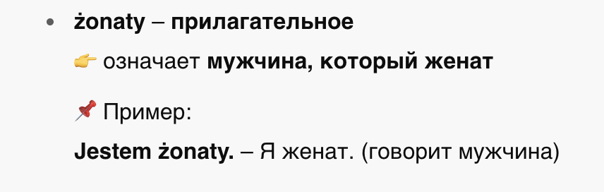
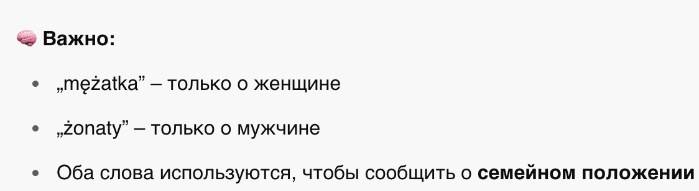
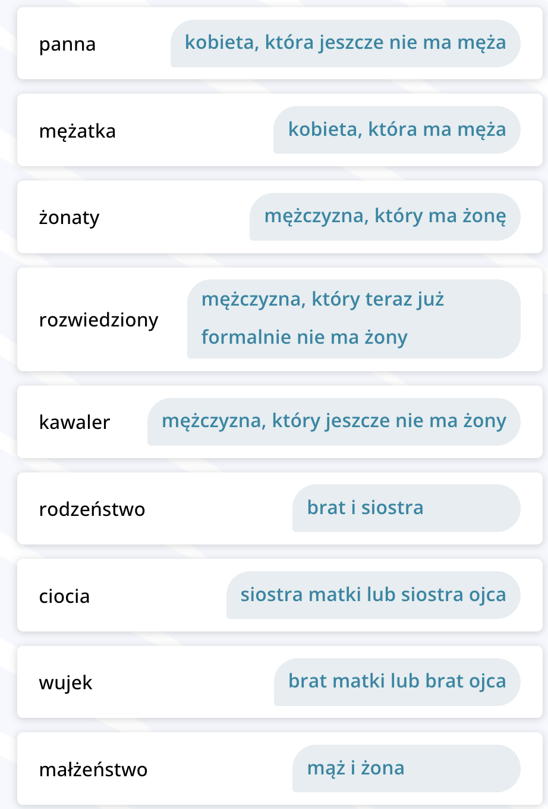
Dialog1

Dialog2
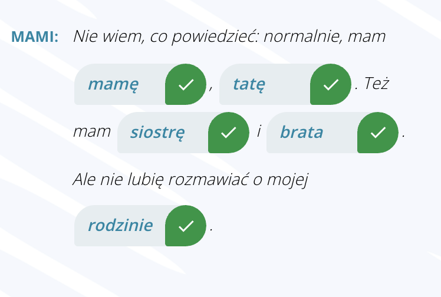
Dialog3
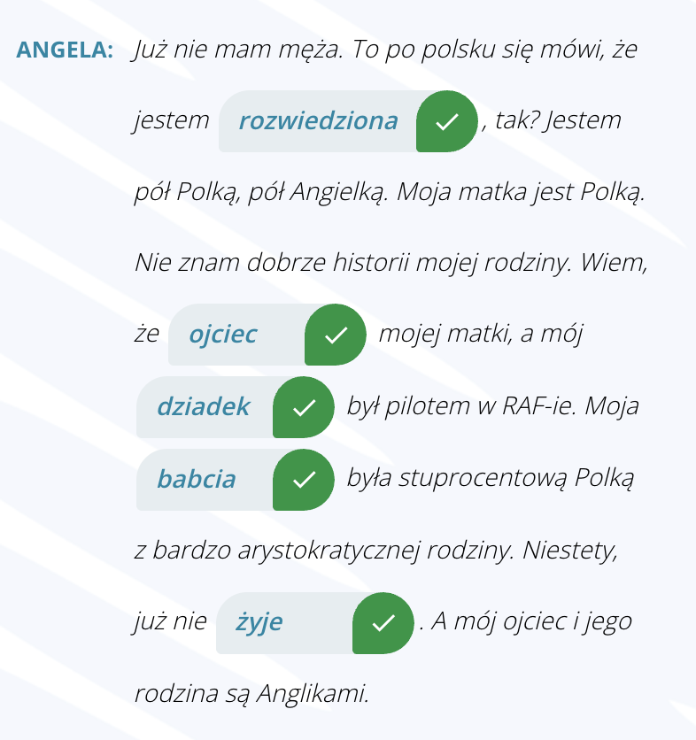
Dialog4
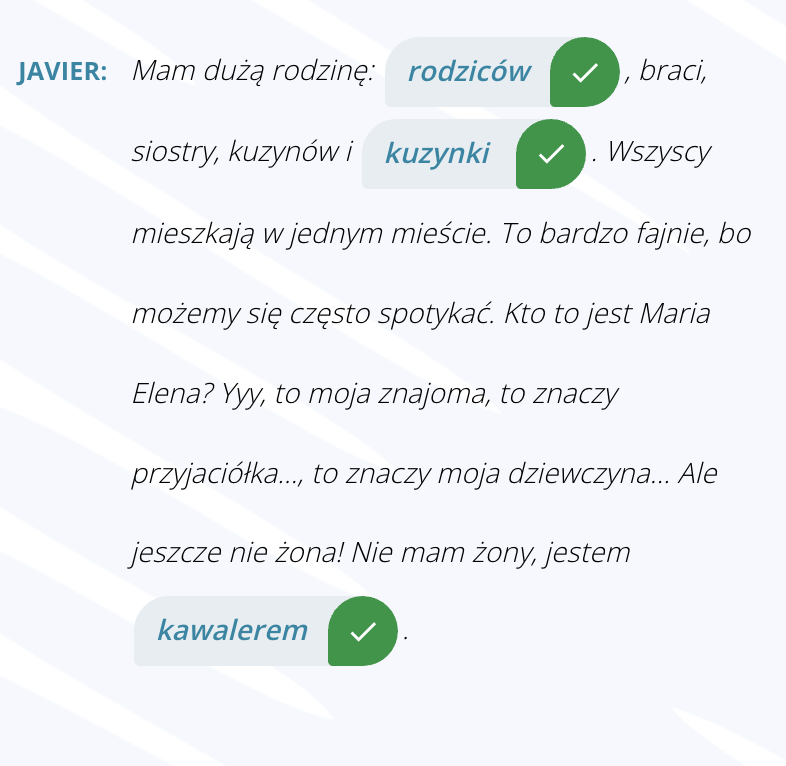
B. Czyj? Czyja? Czyje?
słownistwo - B. Czyj? Czyja? Czyje? =>
Zaimki
🤔 Zaimek pytający: czyj? czyja? czyje?
(Вопросительное местоимение: чей? чья? чьё?)
📌 Эти местоимения изменяются по:
- роду (мужской, женский, средний)
- падежу
- числу (ед./мн.)
🧑👧👦 Zaimek dzierżawczy: mój, twój, jego, jej...
(Притяжательные местоимения: мой, твой, его, её...)
ОСОБЕННОСТЬ:
- Местоимения mój, twój, nasz, wasz — изменяются.
- Местоимения jego, jej, ich — ❗всегда в одной форме (не изменяются).
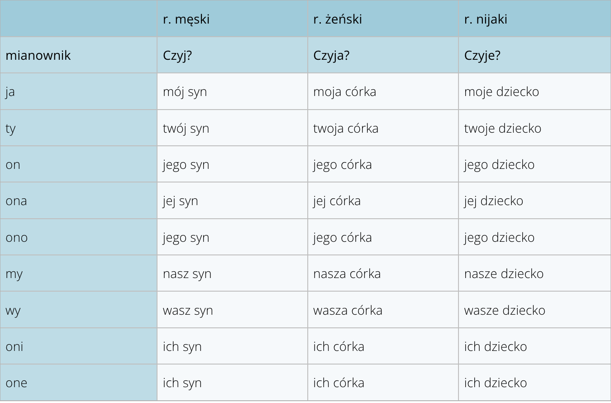
C. Rano czy wieczorem?
🕑 PORY DNIA — ВРЕМЕНА СУТОК
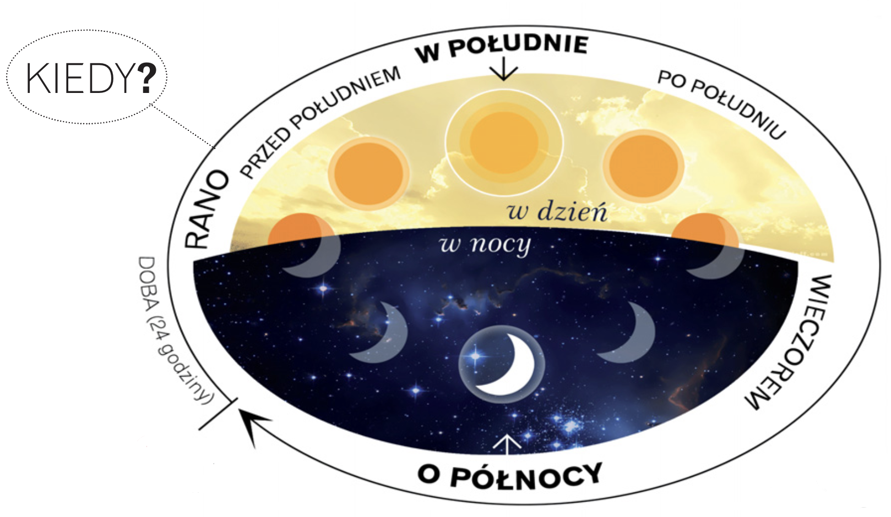
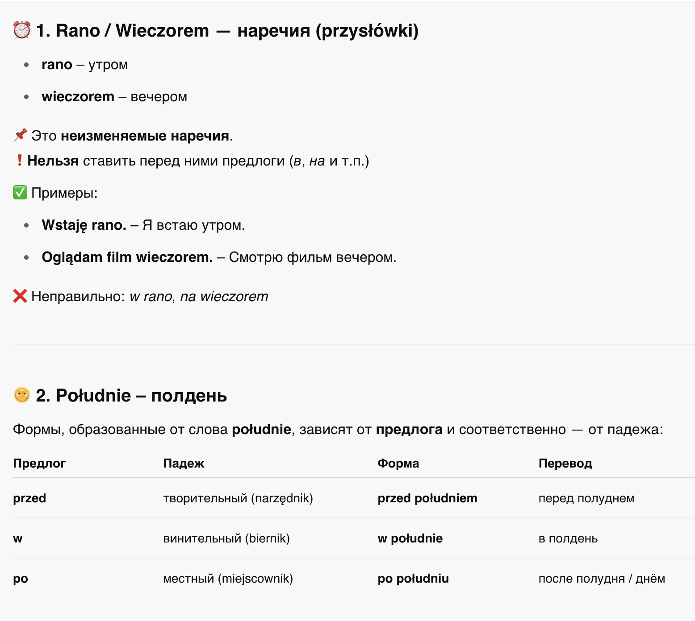
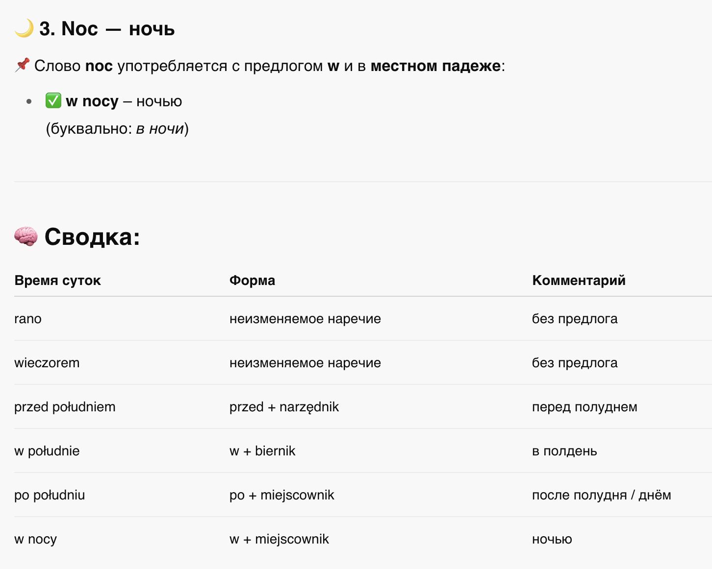